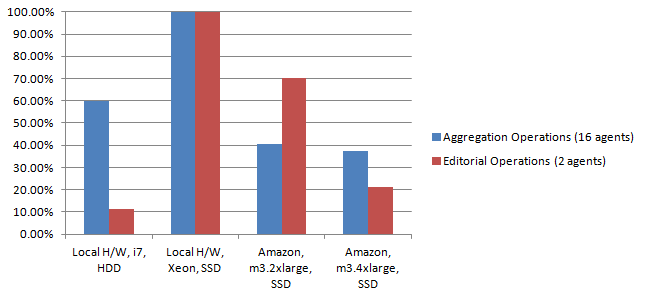
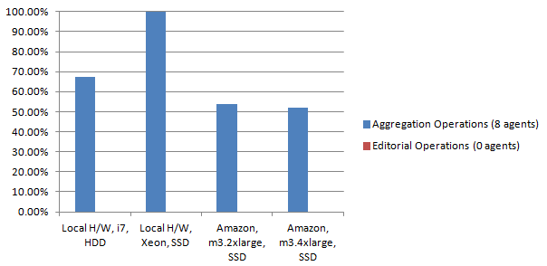

During the past six months we (the OWLIM Team at Ontotext) have integrated the LDBC Semantic Publishing Benchmark (LDBC-SPB) as a part of our development and release process.
First thing we’ve started using the LDBC-SPB for is to monitor the performance of our RDF Store when a new release is about to come out.
Initially we’ve decided to fix some of the benchmark parameters :
- the dataset size - 50 million triples (LDBC-SPB50) * benchmark warmup and benchmark run times - 60s and 600s respectively. * maximum number of Editorail Agents (E) : 2 (threads that will execute INSERT/UPDATE operations) * maximum number of Aggregation Agents (A) : 16 (threads that will execute SELECT operations) * generated data by the benchmark driver to be “freshly” deployed before each benchmark run - benchmark driver can be configured to generate the data and stop. We’re using that option and have a fresh copy of it put aside ready for each run.
Having those parameters fixed, running LDBC-SPB is a straight-forward task. The hardware we’re using for benchmarking is a machine with 2 Intel Xeon CPUs, 8 cores each, 256 GB of memory and SSD storage, running Linux. Another piece of hardware we’ve tested with is a regular desktop machine with Intel i7, 32 GB of memory and HDD storage. During our experiments we have allowed a deviation in results of 5% to 10% because of the multi-threaded nature of the benchmark driver.
We’ve also decided to produce some benchmark results on Amazon’s EC2 Instances and compare with the results we’ve had so far. Starting with m3.2xlarge instance (8 vCPUs, 30GB of memory and 2x80GB SSD storage) on a 50M dataset we’ve achieved more than 50% lower results than ones on our own hardware. On a largrer Amazon Instance c3.4xlarge (16 vCPUs, 30GB of memory and doubled SSD storage) we’ve achieved the same performance in terms of aggregation operations and even worse performance in terms for editorial operations, which we give to the fact that Amazon instances are not providing consistent performance all the time.
Following two charts are showing how OWLIM performs on different hardware and with different configurations. They also give an indication of Amazon’s capabilities compared to the results achieved on a bare-metal hardware.

Figure 1 : OWLIM Performance : 2 amazon instances and 2 local machines. 16 aggregation and 2 editorial agents running simultaneously. Aggregation and editorial operations displayed here should be considered independently, i.e. even though editorial opeartions graph shows higher results on Amazon m3.2xlarge instance, values are normalized and are referring to corresponding type of operation.

Figure 2 : OWLIM Performance : 2 amazon instances and 2 local machines. 8 aggregation running simultaneously. Read-only mode.
Another thing that we’re using LDBC-SPB for is to monitor load performance speeds. Loading of generated data can be done either manually by creating some sort of a script (CURL), or by the benchmark driver itself which will execute a standard POST request against a provided SPARQL endpoint. Benchmark’s data generator can be configured to produce chunks of generated data in various sizes, which can be used for exeperiments on load performance. Of course load times of forward-chaining reasoners can not be compared to backward-chaining ones which is not the goal of the benchmark. Loading performances is not measured “officially“ by LDBC-SPB (although time for loading the data is reported), but its good thing to have when comparing RDF Stores.
An additional and interesting feature of the SPB is the test for conformance to OWL2-RL rule-set. It is a part of the LDBC-SPB benchmark and that phase is called checkConformance. The phase is run independently of the benchmark phase itself. It requires no data generation or loading except the initial set of ontologies. It tests RDF store’s capabilities for conformance to the rules in OWL2-RL rule-set by executing a number of INSERT/ASK queries specific for each rule. The result of that phase is a list of all rules that have been passed or failed which is very useful for regression testing.